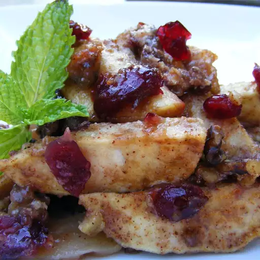

it will probably look like this, when you done with it
Nice meal if you wanna something special from apples, just bake
them
This also serves as a great breakfast, side dish, or dessert.
But if you try to make one for your self you might fall in love with it,
because how fast and easy you can make it
Ingredients
- 6 apples - peeled, cored and sliced
- ½ cup white sugar
- 3 tablespoons all-purpose flour
- ½ teaspoon ground cinnamon
- ½ teaspoon ground nutmeg
- ¼ teaspoon ground cloves
- ½ cup raisins
- ½ cup chopped walnuts
- ½ cup whole milk
How to make:
- Preheat oven to 350 degrees F (175 degrees C)
-
Grease a 2 quart casserole dish, or coat with non-stick cooking spray.
- Place apples in a large bowl
-
In a small bowl, mix together sugar, flour, cinnamon, nutmeg and
cloves
- Stir spice mixture into apples until evenly distributed
- Fold in raisins and walnuts Spoon into prepared dish
- Pour milk evenly over apple mixture
-
Bake in preheated oven for 45 to 60 minutes, or until soft and bubbly
Allow to cool slightly before serving